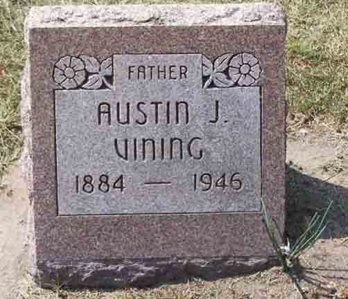

Census Data
| 1920 | 1930 | 1940 | |
| Austin James Vining | ? | 45 | 55 |
| Fanny (Darby) Vining | ? | 32 | 42 |
| [LaVern Avery Vining?] | ? | [living? in separate household] | |
| Austin James Vining Jr. | 4 | 14 | |
| Richard Emerson Vining | 7 m. | 10 |


Death Data
Gravestone for Austin James Vining, in Custer Township Cemetery, Custer Park, Will County, Illinois (from Find A Grave):